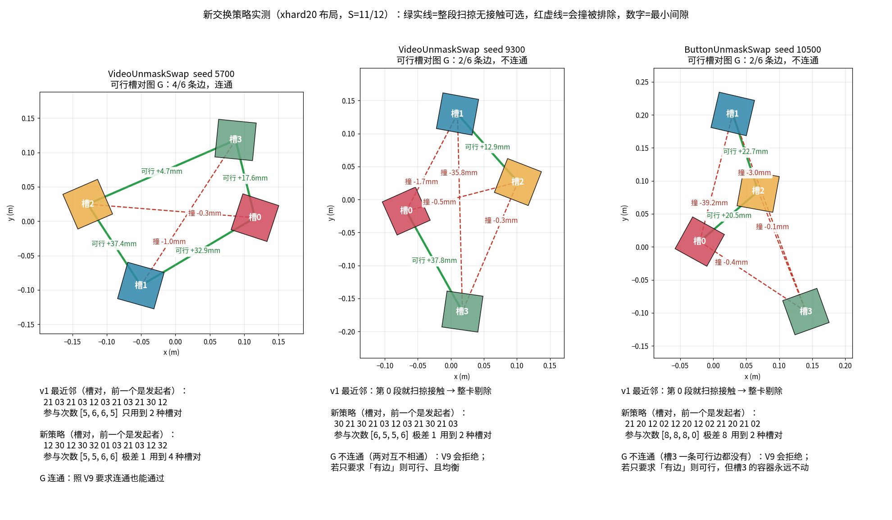

1012-swap-pairing-v2-plan.html — 交换配对 v2：可行槽对图 G + 负载均衡，从 v1 之前重新开始
权威性与锚点：本文件是交换配对 v2 的唯一权威计划，从零写成，不在
1012-swap-collision-plan.html（下称 v1 计划）上增量修改；v1 计划原样保留为历史，不再修订。工作副本/data/hongzefu/robomme_benchmark_newtask-v3-MotionJepa1006、分支newtask-v3-MotionJepa1006（sled-vail，环境 B）。写计划时 HEAD 为3083af74（2.93，v1 全量结论）；v2 代码基线是 v1 动代码之前的0ec9951b（2.76）。外部锚点：V9 配对算法取自origin/newtaskRelease-taskV9的5f4f2f9c，文件src/robomme_hard/robomme_env/utils/swap_uniform.py（sha256f4a1a8c08c629e8924ff1a0d37e9acdd4c7bcfee32ba7be80cf18e6328d85821）；碰撞判据仍是newtask-v2.1refractor@ce72b04f的bin_collision.py（sha256bbe87eec3c36ab54e703a6ff741a5fdd3217c11e2a1541eb95d8f013c852302b）。commit 体例：主线
<大>.<小> 中文描述从 2.94 接续（本计划提交即 2.94）；子代理提交sub/<编号>:前缀，经--no-ff合并。只前进、不改写历史：不reset、不rebase、不--force。当前状态（2.95.5，W2 派发前停工，待用户裁决）：2.95.2 已获批准，A′ 执行完毕。W1-d 经 2.95.3
e5879c798deceb29c524840c969cedfd5a734e7c合入并推送，CORE_SHORT=PASS new_failures=0。派 W2 前发现 K7 与 3.1、第二部分 1.3 的失败处理口径冲突，实施再次停止，W2 未派。本版做了三件事：补上同形、等高前提的实测（SWAP_PREMISE=INFO seeds=30 not_same_shape=0 not_same_height=0）；列出全文自相矛盾的复查清单（第二部分 8.3）；把清单中不需要用户决策的 C3、C5–C20 直接写入正文。C1（K7 与 3.1、1.3 的失败处理）、C2（按钮转包络的位置）以及随 C1 走的 C4 保持原样，等用户裁决后统一修订，并再次交用户审查。上一版修订（2.95.2，已获批并执行）：W1 合并后的核心短测出现一个新增失败，已停工。只调整一个恢复文件的归属与顺序：
src/robomme_xhard/tests/test_contract.py从 W2-b 提前到 W1 的工具恢复阶段，使测试夹具与tools/layout.py同为3083af74字节。已完成的 W1-a/b/c 与合并df4c30780569c9083c0f98c94f44b6a1493f155e不改写；获重新开工令后追加sub/W1-d，审查、短测通过后再继续 W2。上一版 2.94.5 的按钮包络、节点比对、180 身份对账等修订继续有效，V1–V3 裁决见第二部分 8.1。当前授权边界（2.95.5）：用户本轮只要求「补在计划里面 并且再次看 有什么自相矛盾地方」，没有给出 K7 裁决或开工令。本轮补证据、列矛盾，并按用户「没有的话就直接写入」统一纯文字项；不改失败处理口径，不派 W2，不跑 GPU 契约、smoke 或全量。
2.95.2 当时的授权边界（历史）：用户本轮只批准「修订计划，重新交我审查」，不是恢复实施的开工令。本轮只修改本计划及保存停工证据，不恢复测试夹具、不跑核心测试或 GPU 任务、不派 W2、不推送本地失败合并。完整修订版交用户彻底审查并明确批准继续后，才执行下文 A′ 接续；全量 180 卡仍按 P5 在 smoke 后单独报批。
〇、为什么改
- v1（2.77–2.93）的交换配对是「发起者取参与最少者 → 搭档取最近邻 → 再查碰撞」。全量
xhard-1012-coll165/180：VideoUnmaskSwap seed 9300、ButtonUnmaskSwap seed 10500 在第 0 段最近邻对子就扫掠接触（-1.70 mm、-0.44 mm），VideoRepick seed 11200 因运行期最近邻绑定差 1.5 mm 被判失败；每个都五档连带剔除。 - v1 代码从 2.77 到 2.92 经过方案 X、X′ 等多轮补丁。用户要求 v2 不在其上叠加，回到
0ec9951b的代码字节，再用干净的增量 commit 重建。 - V9 分支的做法是「先查后选」：reset 时把所有槽对的整段扫掠都判一遍，得到可行槽对图 G，只在 G 的边里挑，搭档可以不是最近邻，并按参与次数做负载均衡。
第一部分（给人看）
一、一句话与已定口径
本次恢复顺序修订：原计划把新版工具放在 W1-c，把配套测试夹具放在 W2-b，导致 W1 阶段夹具缺少 task_success 字段，实测值 None 与原断言 0 不符。本版将夹具原样恢复提前，恢复的是两条测试输入中的 task_success=1/0，不改成功字段语义或断言。交换策略、按钮包络、槽位绑定、随机流、五档前缀及全量报批口径均沿用原计划。
一句话：代码先整体退回 0ec9951b；重建时碰撞判据、生成器与工具按 v1 最终版原样恢复；配对换成「可行槽对图 G + V9 负载均衡贪心」，口径 B 为每个槽至少有一条可行边，否则整卡剔除；运行期最近邻绑定改为槽位绑定；ButtonUnmaskSwap、VideoRepick 的按钮以保守包络盒纳入碰撞检查。
用户原话（逐字）：
- 「给出方案 只改变交换策略 预先对 4 个槽位的 6 种两两组合各做一次连续碰撞检查，得到可行图 G，只在 G 的边里挑。搭档可以不是最近邻，比如对角线 然后尽可能负债均衡」
- 「不要在这个的基础上做增量 然后重新做计划v2 这个计划的修改 要从 回到v1修改前 用git增量commit的形式 重新开始 不要叠屎山 给出方案 html」
- 「你找一两个现在已有的测试一下。新的这个策略会是什么样子你换一个简单的图2D的图来告诉我」（结果见第二节）
- 「用b 写html」（选口径 B：每个槽至少一条可行边）
- 「这个也要写在里面就是这个机制也要写在里面改之前的机制和改之后的机制都要写在写一个流程图来比这个机制的区别」（见 3.0 与图 3）
- 「上一轮的结果不要覆盖重新再生成一轮。artifacts/xhard/xhard-1012-coll/report/per_episode_strip 尤其是这些证据 还有什么我没确定的」（见 K12、第二部分八）
- 「10 要加入 5 偏到更靠近别的槽才算失败 4 同一种 均衡重排 是什么意思 仔细讲现在这个默认值 其他都同意」（见 K13、K9、3.2「均衡重排」、第二部分八）
- 「并行和回退 同意」（见 K14、第五、六节）
| 编号 | 已定口径 | 依据 |
|---|---|---|
| K1 | 代码从 0ec9951b 重来：一个前进的撤回提交，把 scripts/data-generation-newSeed/generate_dataset_newseed.py 与 src/robomme_xhard/ 恢复成 0ec9951b 的字节，并删除其后新增的 10 个文件；docs 留档、AGENTS/CLAUDE、v1 计划不动 | 用户原话第 2 条；第三节、第二部分一 |
| K2 | G 的判定：reset 时对全部无序槽对各调一次 bin_collision.check_swap_sweep，其余对象静止在各自槽。VideoUnmaskSwap、ButtonUnmaskSwap 有 4 个槽，判 6 次；VideoRepick 有 3 个方块，判 3 次 | 用户原话第 1 条；3.1 |
| K3 | 口径 B：G 里每个槽度数 ≥ 1（V9 isolated_slots(adj) == []）。不满足就抛 SwapCollisionError(stage="graph")，整卡剔除、固定 seed、不重试。不要求连通（V9 要求，用户没选） | 「用b」；第二节实测 |
| K4 | 配对算法：V9 swap_uniform.py 逐字节引入，调用 plan_balanced_swaps(adj, S_max, gen, score="max_sum", budget=20, accept_range=1, forbid_undo=True)，三个任务同一种打分（U4 裁决）。在 G 的边里取两个占用者参与次数「较大值最小，再比和」的一对；不许紧接着换回上一对；整条序列极差大于 1 就换随机数重排，最多 20 次 | 3.2 |
| K5 | 五档前缀关系保留：每个母 seed 按该任务的最大段数 S_max 只规划一次（VideoUnmaskSwap 11、ButtonUnmaskSwap 12、VideoRepick 15，取自 configs.TIER_CONFIGS），各档取前 S 段 | v1 K11 已批；3.2 |
| K6 | 随机流独立：torch.Generator().manual_seed(seed + 0x53574150)，不碰父类随机流；不像 V9 那样从主流追加抽种子 | P1/P2；3.2 |
| K7 | 同形断言：交换对象的盒体集合必须逐盒一致，否则不能按「槽」算 G，抛 SceneGenerationError。实测三个 seed 全部同形 | 3.1 |
| K8 | 逐段再证：规划出的每一段仍按当时真实占用者跑一次 check_swap_sweep。同形下必然与 G 一致；不一致即拒绝，并标为「G 与逐段不符」 | 3.2 |
| K9 | 运行期复核沿用 v1 最终语义：子步布局检查、段起点端点逐位比较（含 X′ 父类 float32 归一化重放）、段起点整段重证。删去最近邻绑定，因为搭档不再是最近邻；改为槽位绑定：每个交换对象实际 xy 离哪个槽最近，那个槽就必须是计划占用的槽；偏到更靠近别的槽才算失败，不另设毫米阈值（U5 裁决） | 3.3 |
| K10 | 母档不变：VideoUnmaskSwap、ButtonUnmaskSwap 的母档是官方 hard（随机 2–3 次、最近邻配对）；VideoRepick 的母档来源是官方 medium（随机 2–3 次、最近邻），官方 hard 根本不交换（config_hard 的 swap_min=swap_max=0）。只改 xhard 五档。src/robomme/ 零 diff | P1、P2；configs.SOURCE_DIFFICULTY |
| K11 | v1 已批口径全部沿用：D2 运行期失败只记 _xhard_fatal、不抛异常；D4 保证范围扩为交换对象之间 + 交换对象与按钮之间（K13，机械臂、桌面仍不在内）；D5 基础设施崩溃卡隔离；D7 六列视频版式；D8 30 母 seed、180 卡、GPU0 --workers 32；P5 smoke 后对全量单独报批 | v1 计划第八节 |
| K12 | 上一轮结果一字不动，另起一轮：v1 全量 artifacts/xhard/xhard-1012-coll/（426 个文件、90 GB，含 report/per_episode_strip/ 30 支六列视频）只读保留。v2 的 smoke、全量、汇总、视频一律写新根 artifacts/xhard/xhard-MMDD-swapv2/；日志写 artifacts/logs/xh-swapv2-*，tmux 名用 xh-swapv2-*，留档写 docs/xhard-doc/xhard-MMDD-swapv2*。起跑前先给旧根做全量 sha256 冻结清单（FREEZE），阶段 D、E 结束后各复核一次（OLD_RUN_INTACT） | 用户 10-12 原话；第五节阶段 0、第二部分八 |
| K13 | 按钮进碰撞判据（U10 裁决）：ButtonUnmaskSwap 的两个按钮、VideoRepick 的一个按钮作为静止旁观物，参与初态检查、建 G 的每条边、逐段再证、段起点重证和每子步检查；VideoUnmaskSwap 没有按钮。实测原判据读不了按钮（3.5），按钮几何改由 swap_plan.py::button_envelope_state 从真实碰撞形状构造一个保守包络盒，交给原样保留的判据；包络口径已裁决（第二部分 8.1 V1） | 3.5；探针 button_probe.txt |
| K14 | 并行与回退按审查建议：撤回和原样恢复合成一个写入代理 W1（分支内依次三个 sub/ 提交：撤回 → 恢复判据并引入 V9 → 恢复生成器与工具），一次合并；W1 合并后到 W2 完成之间仍无交换检查接线，按 X5 禁止生成。从零写 swap_plan.py 与三子类接线合成第二个代理 W2。冻结清单和 30 母 seed 预扫在开工后立即与 W1 同时跑（只读，不依赖 v2 代码） | 用户「并行和回退 同意」；第五、六节；中间态以原 X5 约束为准 |
| K15 | 配套恢复与停工接续（本版待批准）：tests/test_contract.py 归 W1，原样恢复自 3083af74；W1-c 最终恢复集合由 10 文件增至 11 文件。已完成的三个子提交不重做，另追加 W1-d 单文件恢复；独立审查、合并后同一核心短测按节点比对通过，才 push 并派 W2。任何新增失败仍停工，不把本次失败加入基线 | 本轮仅获计划修订授权；第二部分 1.5、runbook A′、8.2 |
二、实测：新策略在已有 seed 上长什么样
只读探针，没改仓库代码。用当前 HEAD 的 xhard20 环境 reset 出真实布局，在进程内把 certify_swap_plan 换成记录器，避免 v1 在 reset 时抛错。G 用 bin_collision.check_swap_sweep 判，配对用 V9 swap_uniform.py 原样计算。GPU0 单进程，三个 seed 共约 1 分钟。脚本、JSON 与图都在 docs/xhard-doc/xhard-1012-swap-v2-probe/。

| 编号 | 任务 / seed | G（6 对里可行） | v1 最近邻 | 新策略 | 口径 B 结论 |
|---|---|---|---|---|---|
| 2.3 | VideoUnmaskSwap 5700 | 4 对（01、03、12、23），连成一圈；对角 02、13 会撞（-0.3、-1.0 mm） | 能过；只在 12、03 两对之间来回，参与 [5,6,6,5] | 4 种槽对都用上，参与 [5,5,6,6]，极差 1，第 1 次就接受 | 通过 |
| 2.3 | VideoUnmaskSwap 9300 | 2 对（03 +37.8 mm、12 +12.9 mm），互不相通 | 第 0 段接触，剔除 | 只能在 03、12 两对之间轮换，参与 [6,5,5,6]，极差 1 | 通过（每个槽都有边） |
| 2.4 | ButtonUnmaskSwap 10500 | 2 对（02 +20.5 mm、12 +22.7 mm），槽 3 和谁换都会撞（-0.1 到 -3.0 mm） | 第 0 段接触，剔除 | 能排，但槽 3 全程不动，参与 [8,8,8,0] | 仍剔除（槽 3 孤立） |
结论：新策略在布局宽裕时用到更多不同的对子，例如 5700 从 2 种变成 4 种，最多和最少只差 1。v1 被剔的两张里，口径 B 救回 9300，10500 仍剔。很多不可行的对子只差 0.1–0.5 mm，判据没有放宽余量，本计划也不放宽。VideoRepick 11200 当时是被最近邻绑定判掉的，这条检查在 v2 中删除；它能否通过要等阶段 D 的 smoke 实跑，现在没有证据。
三、机制：改哪些函数、各干什么
3.0 改前与改后：配对机制对比
两版的共同点：交换动作都是父类 swap_flat_two_lane（两个物体沿相反弯道同时对换，横向偏移 0.07，高度不变），每段 50 步，配对都在 reset 时由 certify_swap_plan 预写进 swap_pair{k}_idx1/idx2，运行期失败一律只记 _xhard_fatal。v2 相对 v1 的完整改动范围：① 配对规则（G + 负载均衡，见图 3 与下表）；② 运行期最近邻绑定改为槽位绑定；③ 按钮纳入碰撞范围（K13）；④ 新增同形与等高检查、按 S_max 规划，以及 G、均衡、槽位绑定、按钮包络的证据字段。交换动作本身、段长、偏移、pick 与按压流程都不改。
| 环节 | 改前 v1（3083af74 的 swap_plan.py::plan_swaps） | 改后 v2（本计划） |
|---|---|---|
| 决定顺序 | 逐段：选一对 → 查这一对 → 撞了就整卡剔除 | 先把全部槽对查完（G）→ 只在不撞的对子里挑 |
| 发起者 | select_initiator：参与次数最少者，排除上一对的两个对象；平局用独立随机流 | 不单独选发起者；以「一对」为单位挑，再用一次随机数定谁当发起者（几何对称，不影响碰撞） |
| 搭档 | 固定为离发起者最近的对象（nearest_partner_index） | G 里任意一条可行边，可以是对角或远处 |
| 均衡 | 只看发起者的参与次数；搭档次数不计；一次贪心不重排 | 两个占用者都计：按（较大值, 和）取最小；整条极差 > 1 就换随机数重排，最多 20 次 |
| 不许换回 | 上一对的两个对象都不能当发起者 | 不许与上一次是同一槽对（forbid_undo） |
| 碰撞范围 | 交换对象之间 | 交换对象之间 + 按钮（K13） |
| 碰撞失败 | 选中的最近邻对子撞了 → SwapCollisionError(stage=sweep) | 有槽一条可行边都没有 → SwapCollisionError(stage=graph)；选出的对子按构造必不撞（K8 再证兜底） |
| 五档前缀 | 贪心逐段确定，天然是前缀 | 按 S_max 一次排完、各档截前 S 段 |
| 运行期绑定 | 段起点重算最近邻，必须等于计划搭档 | 段起点核对每个对象离计划槽最近（偏到更靠近别的槽才失败） |
结合图 2 读一遍（seed 5700，前三段）：
- v1：第 1 段四个对象参与次数都是 0，随机抽到槽 2 的对象当发起者，它的最近邻在槽 1，于是换 21。第 2 段排除刚换过的两个对象，剩下槽 0、槽 3 的对象；抽到槽 0，最近邻是槽 3，于是换 03。之后一直在 21、03 两对之间交替（图 2 左下序列
21 03 21 03 12 03 …），对角 02、13 和外圈 01、23 从不出现，参与[5,6,6,5]。 - v2：先判出 G = {01, 03, 12, 23}（图 2 左上绿线），02（-0.3 mm）、13（-1.0 mm）被排除。第 1 段四条边得分都是 (0,0)，随机抽中 12。第 2 段去掉 12，在 01、03、23 中，03 两端的占用者都还是 0 次，得分 (0,0) 最小，于是换 03。第 3 段去掉 03，01、12、23 三条边得分都是 (1,2)，随机抽中 12。整条用到 4 种槽对，参与
[5,5,6,6]，第 1 次就满足极差 ≤ 1。 - seed 9300：v1 第 0 段抽到的最近邻对子撞了（-1.7 mm），整卡剔除。v2 的 G 只有 03 和 12 两条边，每个槽都有边，口径 B 通过，于是在两对之间轮换，参与
[6,5,5,6]。 - seed 10500：v2 的 G 只有 02 和 12，槽 3 与任何槽都撞（-0.1 到 -3.0 mm），口径 B 在 reset 阶段直接剔除。不剔的话槽 3 的容器全程不动，参与
[8,8,8,0]。
3.1 可行槽对图 G
定义：交换段结束时两个对象精确对换位置（xy）和朝向，各自保留高度。所以一局里对象占据的位姿集合（槽）不变，变的只是谁占哪个槽；两个对象交换的扫掠几何只取决于它们所占的无序槽对。容器同形（K7）时，G 在 reset 时算一次，整局有效。
锚点：src/robomme_xhard/swap_plan.py::slot_graph(states, bystanders) 调 swap_uniform.slot_pair_graph(n, feasible)，其中 feasible(a, b) 是 bc.check_swap_sweep(states[a], states[b], [其余槽对象] + bystanders, sweep_index=-1, stage="graph") 无拒绝。每条边都把按钮包络一起检查：反例是初态不碰按钮、弯道途中擦到按钮，这条边必须在建 G 时就被排除，而不是选中后才在逐段再证时失败。同时返回每对的 gap（可行为下界，不可行为拒绝的 gap_m），写进 _xhard_swap_plan["graph"]。
G 整局不变的前提（审计指出）：交换只互换 xy 和朝向、各自保留高度，所以「按槽算一次 G」成立要同时满足 ① 所有交换对象的盒体集合逐盒相同（half、local_p、local_q 全等），② 所有交换对象的初始高度 z 相同。两条都检查；不满足时不报错，改为每段都按真实占用者重算可行性，并在证据里记 graph_static=false。无论哪种情况，K8 逐段再证都会兜底，G 与逐段不一致即拒绝。
口径 B：swap_plan.py::require_every_slot_covered(adj, gaps) 在 swap_uniform.isolated_slots(adj) 非空时抛 SwapCollisionError(rejection, "graph")，rejection 记孤立槽号及其各对的 gap。B 也保证贪心不会无路可走：n=4 时每个槽有边，至少 2 条边；n=3 时至少 2 条边，去掉上一对后仍有候选。
⚠ 陷阱：G 只证明「这一对动、其余静止在槽上」时无接触。运行期对象相对槽有毫米级漂移（v1 的 11200 差 1.5 mm），所以运行期仍保留段起点整段重证与子步检查（K9），不能只凭 G 放行。
3.2 负载均衡配对（V9 S5，逐字节引入）
# swap_plan.py::certify_swap_plan(env, actors, bystanders, name_prefix)
states = [bc.object_state_from_actor(a, f"{prefix}{i}") for i, a in enumerate(actors)]
check_bin_layout(states + bystander_states) # 初态，v1 原样；bystander_states 为旁观物（按钮包络）状态，转换位置见 8.3 C2
graph_static = same_shapes(states) and same_height(states) # 3.1 前提，记入证据
adj, gaps = slot_graph(states, bystander_states) # K2：每条边含其余槽对象与按钮包络
require_every_slot_covered(adj, gaps) # K3 口径 B
gen = torch.Generator().manual_seed(env.seed + 0x53574150) # K6
full = su.plan_balanced_swaps(adj, S_max(task), gen, score="max_sum",
budget=20, accept_range=1, forbid_undo=True) # K4、K5
for k, (a, b) in enumerate(full.pairs[:env.swap_times]): # 取前 S 段
replay_sweep_with_real_occupants(k, a, b) # K8，逐段再证并更新占用
env.swap_pair{k+1}_idx1, _idx2 = actors[a], actors[b] # 预写，父类 step 不再找最近邻
env._refresh_swap_schedule(); env._xhard_swap_plan = {...}父类 VideoUnmaskSwap.step 只在 swap_pair{i}_idx2 is None 时找最近邻，预写后这个分支不会触发（已读源码核实）。swap_flat_two_lane 对 A、B 对称：互换发起方后，两条弯道几何相同，所以 V9 随机决定谁当发起者不改变 G 的判定。
均衡重排是什么（默认值逐个说明）：
- 一趟贪心：从第 1 段排到第 S_max 段。每段的候选是 G 的边，去掉上一段刚用过的槽对（
forbid_undo=True）。给每条候选边打分：看这条边两端槽上此刻坐着的两个对象各自已经参与了几次，记作 (较大者, 两者之和)，即score="max_sum"。取分数最小的边；若有几条边同分，用随机流等概率抽一条；再抽一次随机数决定两者谁当发起者。换完更新两个对象的计数和占位，进入下一段。 - 验收这一趟：排完后数每个对象的总参与次数，算「极差」= 最多的减最少的。
accept_range=1：极差 ≤ 1 就采用这一趟。4 个对象、S 段交换共有 2S 人次，S=11 时 22 人次分给 4 个对象，最好也只能是 5、5、6、6，极差 1 已经是理论最优。 - 不满足就重排：极差 > 1 时，随机流继续往下走（不重新播种），重新跑一趟贪心；因为同分时抽到的边不同，结果会不同。
budget=20：最多跑 20 趟，中途哪一趟满足就停。 - 20 趟都不满足：取极差最小的那一趟；同样小时取最早的一趟。不报错，
spread_full（整条极差）与tries（用了几趟）写进证据。 - 为什么会需要重排：贪心每步只看眼前，同分时的随机选择可能让某个对象后面「排不上」。例如布局里某个槽只有一条边，那个槽上的对象只能在这条边被选中时参与，前面同分时选别的边，后面就可能补不回来。
- 和五档前缀的关系：极差只按最长的 S_max 段整条验收（VideoUnmaskSwap 11、ButtonUnmaskSwap 12、VideoRepick 15）；各档截取的前 S 段（比如 xhard12 的 4 段）是贪心逐段均衡的，但不单独保证极差 ≤ 1，各档的实际极差
spread_prefix写进证据、汇总照报。 - 可复现：随机流固定为
seed + 0x53574150，同一 seed 每次排出同一条序列。
实测：5700 第 1 趟就得到 [5,5,6,6]（tries=1）；9300 第 1 趟 [6,5,5,6]；10500 因槽 3 孤立，20 趟都是 [8,8,8,0]（极差 8），但它在口径 B 已被剔除，走不到这一步。
收益（实测）：5700 用到的槽对从 2 种增至 4 种，极差保持 1；9300 从「剔除」变为可排。
3.3 运行期复核：换绑定、加按钮
| 检查点 | v1 最终（3083af74） | v2 |
|---|---|---|
| 段起点·绑定 | nearest_partner_index 重算最近邻，必须等于计划搭档（SwapBindingError, check=binding） | 槽位绑定 _slot_binding_evidence(k)：每个交换对象实际 xy 离哪个槽最近，那个槽必须是计划占用槽；偏到更靠近别的槽才算失败（SwapBindingError, check=slot_binding，记录各对象漂移 mm） |
| 段起点·端点 | _endpoint_evidence + parent_start_q（X′），四字段 np.array_equal | 同语义，一次写成，不分两次补丁 |
| 段起点·重证 | 真实状态 check_swap_sweep | 原样，旁观物加入按钮（K13） |
| 子步 | _before/_after_simulation_step 窗内 check_bin_layout | 原样，加入按钮（K13） |
| 送达 | 只记首条 _xhard_fatal，不抛异常（D2） | 原样 |
3.5 按钮进判据（K13）：实测与包络方案
为什么：v1 搭档总是最近邻，弯道短；v2 允许对角和远处搭档，弯道更长。ButtonUnmaskSwap 的两个按钮在桌面左侧（build_button(center_xy=(-0.2, ±0.1))），VideoRepick 有一个按钮，路径可能擦到。
实测（只读探针 button_probe.py，日志 button_probe.txt，ButtonUnmaskSwap seed 10500、VideoRepick seed 11200）：
- 按钮是
object_generation.py::build_button建的关节体（ManiSkillArticulation）：连杆button_base有一个PhysxCollisionShapeBox，半尺寸 (0.0375, 0.0375, 0.0075)；连杆button_cap有一个PhysxCollisionShapeCylinder，半径 0.0225、半长 0.009，经棱柱关节只能沿竖直方向向下运动（limits=[[-travel, 0]]）。 - 原判据
bin_collision.object_state_from_actor读不了按钮：传整个关节体报「PhysxArticulation没有find_component_by_type」，传单个连杆报「PhysxArticulationLinkComponent没有find_component_by_type」，9 次尝试全部uncertified。即便能读，shape_specs_from_actor也只收盒体，遇到圆柱会拒绝；只读底座又会漏掉按帽。所以「返回按钮后自动参与检查」不成立，原计划这一句作废。 - 交换对象的盒体底面高度：ButtonUnmaskSwap 的倒扣容器 6 个盒体底面为 0.032、0.048、0、0、0、0 m（四面墙落在桌面）；VideoRepick 方块底面为 0。
方案（V1 已裁决）：保守包络盒，不改判据。swap_plan.py::button_envelope_state 直接从 SAPIEN 连杆组件 get_collision_shapes() 读出底座盒体与按帽圆柱的真实尺寸和世界位姿，构造一个盒体：水平范围取底座盒体与按帽圆柱外接正方形的并集，竖直范围从桌面到按帽未按下时的顶面（按当前数值为 0 到 0.033 m）。这个盒体以 bc.ObjectState 形式作为旁观物传给原样保留的判据，bin_collision.py 一字不改。
- 为什么保守：按帽圆柱（半径 0.0225）完全落在底座正方形（半边 0.0375）的水平投影内，按帽只能向下运动，所以任何按压状态下按钮的实际几何都被这个静止盒体包住；按钮内部底座与按帽的自接触不出现（整个按钮只是一个盒体）。
- 多算了多少：只多出按帽圆柱外、底座正方形内、高度 0.015 至 0.033 m 的那圈空间。交换对象的墙体都从桌面立起，水平上只要碰到这圈，就一定先碰到底座本体，所以对这三个任务而言包络与真实几何的判定结果应当相同。这是推理，未数值验证，预扫在三列「不含按钮 / 只用底座 / 包络」中对比后两列的 G 来核对（实测
base_envelope_diff=0）。 - 判定行：
BUTTON_ENVELOPE=PASS buttons=3 base_box=1 cap_cylinder=1 cap_inside_base=1：每个按钮恰好读到一个底座盒体、一个按帽圆柱，按帽半径 ≤ 底座半边，包络顶面 = 按帽顶面；任一不符即停，不手写尺寸、不静默跳过。
备选：① 给判据新增圆柱支持（要改引入文件 bin_collision.py，违反 R0-4，不推荐）；② 只用底座盒体（漏掉按帽，不推荐）。
影响：可行的对子只会变少或不变，口径 B 的剔除数可能上升；预扫给出「不含按钮 / 只用底座 / 包络」三列的对比。
3.6 三个任务相对官方的最终行为差异（v2 实施后）
按审计意见补充：区分「本次 v2 相对 v1 新改的」（3.0 第一段）与「最终 xhard 相对官方原版的差异」（本表）。五档数值依次为 xhard12/14/16/18/20。三项都不新增物体。
| 编号 | 任务 | 扩充物体 | 官方执行不到的行为 | 参数越界及其他差异 |
|---|---|---|---|---|
| 2.3 | VideoUnmaskSwap | 没有；仍是官方 hard 的四个容器、三色隐藏块 | 允许当前非最近邻对象作搭档（超出官方配对规则）；交换动作仍是原双弯道 | 交换次数 S = 4/5/7/9/11，超出官方各档 1–3；每段仍 50 步、偏移 0.07；两抓不变，演示段延长 |
| 2.4 | ButtonUnmaskSwap | 没有；四个容器、三色隐藏块、两个按钮都是原有物体 | 非最近邻配对；右起左右交替按压 3–6 次（原任务流程不能产生的序列），私有边沿计数：按住不重复计，错侧或双按不推进 | P/S = 3/4、4/6、4/8、5/10、6/12，S 超出原范围；第一抓前先等末次交换落定；两抓尾段保留；拒绝失败恢复开关 |
| 3.2 | VideoRepick | 没有；用官方 medium 的三块同色方块和一个按钮 | 非最近邻配对 | S = 5/7/10/13/15，超出官方 easy/medium 的 1–3；重抓 R 固定为 2（本在官方 1–3 内，不算越界）；演示交换段延长 |
S 的扩域属于参数越界，不是新的运动动作；非最近邻配对扩大的是搭档选择规则，不代表每个 seed、每一段都会用到非最近邻搭档。
3.4 改动一览
| 文件 | 锚点 | v2 怎么来 |
|---|---|---|
src/robomme_xhard/collision/{bin_collision.py,__init__.py,VENDORED.md} | 判据与错误类 | bin_collision.py、__init__.py 从 3083af74 字节恢复（判据本身逐字节未改，sha 不变）；VENDORED.md 先恢复 v1 原文，再追加 V9 来源，因此不与 3083af74 逐字节相同 |
src/robomme_xhard/collision/swap_uniform.py（新） | plan_balanced_swaps 等 | 从 V9 5f4f2f9c 逐字节引入，VENDORED.md 追加一条来源 |
src/robomme_xhard/swap_plan.py | slot_graph、require_every_slot_covered、certify_swap_plan、SwapCollisionMixin | 重写：规划部分换成 3.1/3.2；运行期部分按 3.3，删最近邻绑定、加槽位绑定 |
src/robomme_xhard/envs/{video_unmask_swap,button_unmask_swap,video_repick}.py | _load_scene 接线、_bystander_actors | 以 3083af74 版本为底、接线不变（见第二部分 1.4），certify_swap_plan 签名不变（S_max 在其内部查表）；_bystander_actors 返回按钮（K13） |
生成器 generate_dataset_newseed.py、jobs.py、tools/{layout,summarize,mother_seeds,episode_strip_video}.py | 失败证据、隔离、母 seed、汇总、视频 | 从 3083af74 字节恢复（与配对无关）；summarize 已认 SwapBindingError，无需改 |
src/robomme_xhard/tests/ | v1 新增与修改的测试 | 与配对无关的字节恢复；test_swap_plan.py 重写（第二部分一） |
四、验收判定行
| 判定行 | 查什么 | 怎么查 | 过了说明什么 |
|---|---|---|---|
REVERT_V1=PASS paths=2 diff=0 removed=10 | 撤回提交后两条代码路径与 0ec9951b 字节一致 | git diff --quiet 0ec9951b -- scripts/data-generation-newSeed/generate_dataset_newseed.py src/robomme_xhard | v2 起点就是 v1 之前的代码，没有残留补丁 |
FREEZE=PASS files=426 | 阶段 0 给旧根 artifacts/xhard/xhard-1012-coll/ 建全量 sha256 冻结清单 | 清单行数等于 426（runbook 0-a） | 之后的 OLD_RUN_INTACT 有固定对照物；2026-10-12 已实测通过 |
SRC_ROBOMME_ZERO_DIFF=PASS base=0ec9951b | P1：受保护目录在整合提交与固定基线之间零差异 | git diff --quiet 0ec9951b <合并提交> -- src/robomme/（每次合并后；比较两个提交，而不是 HEAD 与工作区，已提交并合入的改动也能抓到） | 官方代码一字未动 |
VENDOR_BYTES=PASS files=2 | 两份引入文件的 sha256 | sha256sum 对 bbe87eec…、f4a1a8c0… | 判据与配对算法和来源逐字节相同 |
RESTORE_V1_FINAL=PASS files=N diff=0 | 字节恢复类文件与 3083af74 一致 | 逐文件 git diff --quiet 3083af74 -- <文件> | 只有配对相关文件是新写的 |
W1_FIXTURE_BYTES=PASS files=1 diff=0 | test_contract.py 与新版工具的测试夹具配套 | W1-d 提交处及整合后分别执行 git diff --quiet 3083af74 <TIP> -- src/robomme_xhard/tests/test_contract.py；同时复核 W1-c/d 的 11 文件恢复集合 | 文件完整命中已固定版本；没有现场修改断言、推断成功字段或放宽基线 |
SWAP_PLAN_V2_CPU=PASS | 纯函数单测：G 构造、口径 B 拒绝、对角搭档可选、禁撤销、前缀、可复现、同形断言、槽位绑定 | pytest src/robomme_xhard/tests/test_swap_plan.py -q | 规划逻辑与口径一致 |
CORE_SHORT=PASS new_failures=0 | 全仓轻量测试，按测试节点比较 | timeout 280s uv run --no-sync python -m pytest tests/lightweight/ src/robomme_xhard/tests -m 'not gpu and not slow' -q -rf，取 FAILED 节点集合，与 v1 基线 docs/xhard-doc/xhard-1012-collision-smoke/records/xh-coll-baseline-cpu-1012.log 的 4 个已知失败节点（test_TaskGoal.py 2 个、test_step_error_handling.py 2 个）逐个比对 | 不在基线集合里的失败节点一个都不允许；基线节点若变为通过只报告不阻断。只比数量会让「修好一个、新坏一个」误放行 |
XHARD_FATAL_CATCH=PASS tasks=3 hang=0 | 运行期失败能送达生成器 | test_fatal_catch.py（GPU0） | D2 送达链路完好 |
BUTTON_ENVELOPE=PASS buttons=3 base_box=1 cap_cylinder=1 cap_inside_base=1 | 按钮包络能从真实碰撞形状构造，且按帽被底座水平覆盖 | 预扫脚本内，每个任务第一个 seed；W2 单测用真实读数复核 | K13 可实施 |
SWAP_V2_GRAPH_SCAN=INFO seeds=30 b_pass=x b_reject=y | 30 个母 seed 的 G 与口径 B 预判（只 reset，不 rollout），分「不含按钮」「只用底座」「包络」三列 | 阶段 0 预扫，xhard20 布局，与 W1 同时跑 | 开工即知剔除数；剔除超过 6 个先停（U6） |
SWAP_V2_SMOKE=PASS cards=4 | 5700、9300、10500、11200 各一张 xhard20 | GPU0 单 worker | 5700、9300 必须成功；10500 必须在 reset 阶段以 stage=graph 剔除；11200 若因碰撞或槽位绑定被正常剔除（有判据证据）不阻断，接口或基础设施失败阻断（V2 已裁决）。任何接口或基础设施类失败（Traceback、uncertified 几何读取、进程池损坏、隔离卡）一律阻断 |
XHARD_FULL_DERIVE=DONE expected=180 seen=180 missing=0 dup=0 unknown=0 ok=… task_reject=… infra=0 | 全量：180 个预期身份（任务、母 episode、seed、档位）逐一交代 | 按 mother_seeds_all.json 展开 180 个预期身份，与 episode_results.jsonl 逐个对账：无缺项、无重复、无未知状态；正常碰撞或绑定剔除（task_reject）与基础设施失败（infra）分开计数 | 汇总程序退出零只说明已有 H5 的标签与非空检查通过，不说明 180 个身份都有下落；本判定行补上这一点 |
REPORT_V1V2=PASS seeds=30 rows=180 | U3 的 v1 对 v2 逐母 seed 对比表，以及 spread_full、spread_prefix 分布 | 新工具 tools/swap_v2_report.py（W2-c），只读两轮的 episode_results.jsonl，输出到新目录 report/v1_vs_v2.{md,json} | 已批准的报告要求有写者、有验收 |
EPISODE_STRIP_VIDEO=PASS videos=30 | 六列视频 | episode_strip_video，--out-dir artifacts/xhard/xhard-MMDD-swapv2/report/per_episode_strip | D7 版式 |
NEW_ROOT_FRESH=PASS | 每次生成、汇总、出视频前，目标目录不存在 | test ! -e <目标>，写在命令最前面并用 && 串联 | 新一轮不会写进任何已有目录 |
OLD_RUN_INTACT=PASS files=426 mismatches=0 | v1 全量根逐文件 sha256、字节数、文件数与冻结清单一致 | sha256sum -c 冻结清单（阶段 0 生成；阶段 D、E 各结束后复核） | 上一轮证据（尤其 30 支视频）没被覆盖、删除或新增文件 |
五、实施步骤
| 阶段 | 内容 | 判据 |
|---|---|---|
| 0（同时开始） | ① 派 W1；② 主会话给旧目录做冻结清单并 chmod -R a-w（U1）；③ 主会话在主检出跑 30 母 seed 预扫（GPU0，只 reset，含按钮）。②③ 只读，不依赖 v2 代码，与 W1 同时进行，须在 W1 合并前跑完 | FREEZE=PASS files=426、BUTTON_ENVELOPE、SWAP_V2_GRAPH_SCAN（剔除 > 6 先停） |
| A | W1（一个代理、三个 sub/ 提交）：撤回到 0ec9951b → 恢复判据并引入 V9 → 恢复生成器与工具；审查后一次 --no-ff 合并（2.95） | REVERT_V1（W1-a 提交处）、VENDOR_BYTES、RESTORE_V1_FINAL、合并后核心短测 |
| A′（已于 2.95.3 执行并推送） | 用户重新批准本版后：原 W1 代理在独立 worktree 从批准版主线提交接续，仅原样恢复 test_contract.py，提交 W1-d；独立审查后 --no-ff 整合，核心短测通过后 push。未通过仍停，不派 W2 | PRE_MERGE_REVIEW、W1_FIXTURE_BYTES、RESTORE_V1_FINAL=PASS files=11 diff=0、SRC_ROBOMME_ZERO_DIFF、CORE_SHORT=PASS new_failures=0 |
| B | W2（一个代理、三个 sub/ 提交）：从零写 swap_plan.py（含按钮包络）与单测 → 三子类接线与测试 → 新增 tools/swap_v2_report.py 与单测；审查后合并（2.96） | SWAP_PLAN_V2_CPU、SRC_ROBOMME_ZERO_DIFF、核心短测 |
| D | GPU：契约测试 → XHARD_FATAL_CATCH → 4 卡 smoke → 复核旧目录 | XHARD_FATAL_CATCH、SWAP_V2_SMOKE、OLD_RUN_INTACT |
| E | 报批后：Beta 提交 → 全量 180 卡（新目录 xhard-MMDD-swapv2）→ 汇总、视频、v1 对 v2 对比表（swap_v2_report.py）、留档 → 复核旧目录 | XHARD_FULL_DERIVE、EPISODE_STRIP_VIDEO、REPORT_V1V2、OLD_RUN_INTACT |
5.1 已完成与停止证据（不改写原阶段）
开工基线 a00efbe1c00569934f12f4dd398d2a8b0e20e118；阶段 0 已完成，档案名固定为 xhard-1012-swapv2，跨日接续不另起名字、不重跑预扫。旧根 FREEZE=PASS files=426；预扫从干净提交 adefbe3e94b5fb2acfe78ec7ba69cf5611c74207 起跑，BUTTON_ENVELOPE=PASS buttons=3 base_box=1 cap_cylinder=1 cap_inside_base=1，SWAP_V2_GRAPH_SCAN=INFO seeds=30 b_pass=27 b_reject=3 base_envelope_diff=0，退出零，未超过六个剔除上限。剔除为 ButtonUnmaskSwap 10500、VideoRepick 10000/10400，均不补 seed。
阶段 A 合并为 df4c30780569c9083c0f98c94f44b6a1493f155e，引入测试 36 项通过、合并前静态审查通过；合并后核心短测 353 项通过、5 项失败、2 项跳过，8.09 秒，退出 1。逐节点比对四个既有基线失败，仅新增 test_contract.py::test_s3_layout_fallback_to_root_jsonl，故 CORE_SHORT=FAIL new_failures=1。W1 的三个子提交和合并只留本地，实施已停；W2、GPU 契约、四卡 smoke、全量均未开始。完整结果与日志见 停工档案、核心短测日志、失败节点比对。
A′ 接续（2.95.3，已推送）：用户原话「同意修订后的 2.95.2 计划，开工继续。有重大口径调整一律停工问我，全量仍在 smoke 后单独报批。」W1-d 为 09b22e778171f774e77a88d777c1ff72e9d275ba，独立审查 PRE_MERGE_REVIEW=PASS 后合并为 e5879c798deceb29c524840c969cedfd5a734e7c。判定行：W1_FIXTURE_BYTES=PASS files=1 diff=0、RESTORE_V1_FINAL=PASS files=11 diff=0、SRC_ROBOMME_ZERO_DIFF=PASS base=0ec9951b。核心短测 354 项通过、4 项失败、2 项跳过，用时 7.69 秒；4 个失败节点与原基线逐节点一致，判定 CORE_SHORT=PASS new_failures=0，随后推送。W2 派发前因 K7 与 3.1 的冲突停工，见第二部分 8.3。
同形与等高前提实测（裁决前只读核对）：在 HEAD 061058b4969d35e14245776343902c5652ce6d10 上，用只读探针对阶段零的同一批 30 个母 seed 逐个 reset。读取时点在 xhard 子类 _load_scene 末尾，与 v1 规划器的调用时点相同。按 3.1 的口径，逐盒比较 half、local_p、local_q，并比较各对象初始 z。结果 SWAP_PREMISE=INFO seeds=30 not_same_shape=0 not_same_height=0：VideoUnmaskSwap 与 ButtonUnmaskSwap 每个对象 6 个盒体，z 全为 0.052 m；VideoRepick 每个对象 1 个盒体，z 全为 0.020 m；逐盒偏差 0.0。每个任务在 30 个 seed 之间只出现一种盒体组合；被剔除的 3 个 seed 同样满足两项前提。进程在汇总行和 JSON 写出后以 139 退出（关闭阶段段错误），数据完整。证据见 探针输出、逐 seed 结果、探针脚本。这只说明在当前母 seed 上「不同形或不等高」分支不会触发，不代替用户对 K7 冲突的裁决。
六、子代理分工与合并（简述）
只派两个写入代理，顺序执行。W1 在独立 worktree 里先做撤回提交，把代码退回 0ec9951b；接着在同一分支上原样恢复判据、引入 V9 算法，再原样恢复生成器与工具。三步各是一个 sub/ 提交，历史里能看到「退回 → 逐块恢复」，初次只合并一次；W2 完成前按 X5 禁止生成。W2 从 W1 合并后的 HEAD 分出，先从零写 swap_plan.py（G、口径 B、均衡、槽位绑定），再接三个子类（含按钮），最后新增 v1 对 v2 报告工具（W2-c）。swap_plan.py 和子类测试互相依赖，所以放在同一个代理里顺序做，不再假并行。每次合并前，主会话核对改动文件不越界，并派一个只读审查代理审 BASE..TIP；合并后跑短测、核对 src/robomme/ 零 diff，通过即 push。真正的并行在开工那一刻：W1 写代码的同时，主会话在主检出做冻结清单和 30 个母 seed 的预扫，剔除数在写完代码前就能知道。
本轮接续覆盖上段的未完成步骤：W1 仍用原代码修改代理 gpt-6.1-sol，复用其独立工作树和 codex/swapv2-w1 分支，从本版获批时记录的主线提交快进接续；只派 W1-d 单文件恢复，不重做三个已有提交。独立审查代理用 gpt-6.1-sol 审固定 BASE/TIP，主会话整合后复跑 CPU 核心短测。W2 从 W1-d 整合且闸门通过后的 HEAD 分出，做 W2-a/b/c 三个提交，不能从当前失败中间态提前派发。探索仅按需用只读 gpt-6-luna；运行角色与修代码角色仍分别委派。
逐文件、逐函数的细节见第二部分。
第二部分（技术细节，供 agent 追踪）
〇、红线
- R0-1
src/robomme/零 diff，不覆盖其中任何方法（P1）。v2 的覆盖点与 v1 已批的 K8′ 相同（预写swap_pair{k}_idx*、混入改变 MRO、新增_xhard_*属性），新增的只有_xhard_swap_plan["graph"]字段和check="slot_binding"取值。 - R0-2 历史只前进：禁止
git reset、rebase、push --force、commit --amend。撤回用「git checkout 0ec9951b -- <两条路径>+ 逐个git rm」做成一个普通提交，不用git revert逐个反做 v1 的合并提交（避免一串反向合并）。 - R0-3 docs 下 v1 留档（
docs/xhard-doc/xhard-1012-coll*）、1012-swap-collision-plan.html、AGENTS.md、CLAUDE.md 不在撤回范围。 - R0-4 两份引入文件逐字节不改（
bin_collision.py、swap_uniform.py）；行为差异只能写在swap_plan.py。 - R0-5 判据不放宽：
EPS_M=1e-6不变，不加安全余量，不因 0.1 mm 级接触改判。 - R0-6 失败不换 seed、不重试（P2）；G 不满足 B 即整卡剔除。
- R0-8 不得写入、移动、删除
artifacts/xhard/xhard-1012-coll/下任何文件；任何工具的--out-dir、--output-dir、--out-md、--out-json都不得指向该目录。generate_dataset_newseed.py允许已存在的输出目录（只拒绝已有 H5），汇总与视频工具会直接覆盖同名文件，所以必须靠NEW_ROOT_FRESH前置检查挡住，不能依赖工具自身。 - R0-7 生成只在本机 GPU0（P7），tmux 前缀
xh-；全量 180 卡须在 smoke 后单独报批（P5）。
一、逐文件改动清单
1.1 W1-a：撤回提交（W1 分支内第一个提交）
git checkout 0ec9951b -- scripts/data-generation-newSeed/generate_dataset_newseed.py src/robomme_xhard
git rm src/robomme_xhard/collision/VENDORED.md src/robomme_xhard/collision/__init__.py \
src/robomme_xhard/collision/bin_collision.py src/robomme_xhard/swap_plan.py \
src/robomme_xhard/tests/test_bin_collision_vendored.py src/robomme_xhard/tests/test_collision_tools.py \
src/robomme_xhard/tests/test_fatal_catch.py src/robomme_xhard/tests/test_swap_collision_gpu.py \
src/robomme_xhard/tests/test_swap_plan.py src/robomme_xhard/tests/test_worker_evidence.py
# 共 10 个 git rm，与 git diff --diff-filter=A 实列新增数一致
git diff --quiet 0ec9951b -- scripts/data-generation-newSeed/generate_dataset_newseed.py src/robomme_xhard && echo REVERT_V1=PASSgit diff --name-status 0ec9951b 3083af74 -- src scripts tests 实列新增（A）10 个、修改（M）13 个文件，全部在这两条路径内；上面 git rm 恰为 10 个 A。23 个文件在本修订版中的最终去向：W1-b 认领 4 个，W1-c 认领 11 个（共 15 个：14 个与 3083af74 逐字节相同，VENDORED.md 恢复后追加来源；其中 test_contract.py 在本轮以 W1-d 补足），W2-a 认领 2 个，W2-b 认领 6 个，无遗漏、无重叠。已执行的 W1-c 仍是 10 文件，不修改历史计数。
1.2 W1-b：判据与配对算法
collision/bin_collision.py、collision/__init__.py、tests/test_bin_collision_vendored.py：git show 3083af74:<路径> > <路径>，字节恢复。collision/swap_uniform.py：git show 5f4f2f9c:src/robomme_hard/robomme_env/utils/swap_uniform.py，字节引入（只依赖torch，无仓库内 import）。collision/VENDORED.md：恢复 v1 原文，并追加第二条来源（仓库、分支newtaskRelease-taskV9、提交5f4f2f9c、来源路径、sha256、导入日期 2026-10-12）。- 新增
tests/test_swap_uniform_vendored.py：sha 断言、slot_pair_graph/isolated_slots/plan_balanced_swaps在 4 槽环、两对互斥、3 槽三个形状上的确定性输出。
1.3 W2-a：swap_plan.py 从零写
- 常量：
SWAP_PLAN_SEED_OFFSET = 0x53574150；PLAN_SCORE="max_sum"、PLAN_BUDGET=20、PLAN_ACCEPT_RANGE=1。 max_swap_count(task)：max(cfg["swap_count"] for cfg in TIER_CONFIGS[task].values())（11/12/15）。same_shapes(states)、same_height(states)：逐盒np.array_equal比较half、local_p、local_q，以及各对象初始 z 是否全等；结果记graph_static，为假时 G 按真实占用者逐段计算。button_envelope_state(articulation, name)：见 3.5，返回bc.ObjectState，形状只有一个盒体。slot_graph(states, bystanders)→(adj, gaps)；require_every_slot_covered(adj, gaps)。SwapPlan字段：pairs（[a, b, distance, gap]，与 v1 同形，summarize、test_collision_tools照读）、usage、initiator_usage、partner_usage、initial_gap，新增slot_pairs、graph（adj、gaps）、s_max、spread_full、spread_prefix、tries。certify_swap_plan(env, actors, bystanders, name_prefix)：按 3.2 伪码；签名与 v1 相同。parent_start_q、_endpoint_evidence、_substep_check、_runtime_guard、三个钩子：按 v1 最终语义写（可直接取3083af74版本的函数体）。_check_segment_start(k)：顺序为槽位绑定 → 端点 → 重证。槽位绑定的槽中心取_xhard_swap_plan里 reset 时记下的槽 xy；占用表按slot_pairs[:k]推演。tests/test_swap_plan.py重写，保留 v1 中与配对无关的用例（端点、X′、钩子时序、送达、窗口），删去select_initiator与最近邻绑定用例，新增：口径 B 孤立槽拒绝、9300 形布局（两对互斥）可排、对角边被选中、禁撤销、前缀一致（S=4 是 S=11 的前缀）、同 seed 可复现、K8 不一致拒绝、槽位绑定在对象仍离计划槽最近时通过、偏到更靠近别的槽时记 fatal；按钮作为旁观物时会把撞按钮的槽对排除出 G。
1.4 W2-b：三个子类
envs/video_unmask_swap.py、button_unmask_swap.py、video_repick.py：以3083af74版本为底，接线不变（_load_scene末尾certify_swap_plan，_swap_actors、_bystander_actors、_refresh_swap_schedule）；docstring 中「搭档取最近邻」改为 G + 负载均衡说明；_bystander_actors改为返回按钮（ButtonUnmaskSwap 两个、VideoRepick 一个、VideoUnmaskSwap 无），按钮几何一律经swap_plan.py::button_envelope_state转成包络盒（3.5），不直接把关节体交给判据。tests/test_swap_collision_gpu.py：以 v1 版本为底，test_reset_certifies_all_pairs去掉对最近邻的断言，增加「每段槽对 ∈ G」「孤立槽 seed（10500）reset 抛SwapCollisionErrorstage=graph」「ButtonUnmaskSwap、VideoRepick 的_bystander_actors非空」「同一 seed 的五档slots、graph逐项相同，且低档配对是 xhard20 配对的前缀」（盲区清单的五档比对由此用例承担，随 D1 一并通过）；test_fatal_catch.py、test_s2_configs.py字节恢复。test_contract.py已移交 W1，W2 不写。
1.5 W1-c：生成器与工具
字节恢复自 3083af74：generate_dataset_newseed.py、jobs.py、tools/layout.py、tools/summarize.py、tools/mother_seeds.py、tools/episode_strip_video.py，测试 test_jobs.py、test_episode_strip_video.py、test_worker_evidence.py、test_collision_tools.py、test_contract.py，共 11 文件。原 W1-c 已恢复前 10 文件，本轮获批后 W1-d 仅补最后 1 文件。最终判定行 RESTORE_V1_FINAL=PASS files=11 diff=0。
W1-d 单文件接续契约：允许写入、暂存、提交的集合只有 src/robomme_xhard/tests/test_contract.py。使用 git checkout 3083af74 -- src/robomme_xhard/tests/test_contract.py 完整取回固定字节，禁止手改断言、修改 layout.py::_canonical_result 的缺失字段语义或推断 task_success。历史差异仅是 _s3_root 的两条 JSONL 输入新增 task_success=1 与 task_success=0；测试断言原样。提交 subject 为 sub/W1-d: 原样恢复工具配套测试夹具，不 push，不合主分支。
1.6 W2-c：v1 对 v2 报告工具
- 新增
src/robomme_xhard/tools/swap_v2_report.py：--v1 <v1 输出根> --v2 <v2 输出根> --seeds <母 seed 清单> --out-md --out-json，只读两轮的episode_results.jsonl，不改summarize.py（它按 1.5 原样恢复）。 - 输出：逐母 seed × 档位的 v1/v2 对比（成功与否、错误类型与阶段、用到几种槽对、参与次数、
spread_full、spread_prefix、timestep）；按任务 × 档位的spread_prefix分布与净置换恒等比例；180 个预期身份对账（XHARD_FULL_DERIVE的missing/dup/unknown由它计算）。 - 写出前检查输出路径不在旧目录内、目标文件不存在；末行打印
REPORT_V1V2=PASS seeds=30 rows=180。 tests/test_swap_v2_report.py：用合成 jsonl 覆盖缺项、重复、未知状态、旧目录输出拒绝。
二、子代理分配表
| 编号 | 目标 | 可写集合 | 禁触 | 契约与依赖 | 合并顺序 | 验收（worktree 内，CPU） | 资源 |
|---|---|---|---|---|---|---|---|
| W1 | 三个 sub/ 提交：W1-a 撤回（1.1）→ W1-b 判据与 V9 引入（1.2）→ W1-c 生成器与工具恢复（1.5） | scripts/data-generation-newSeed/generate_dataset_newseed.py、src/robomme_xhard/** 中 1.1/1.2/1.5 所列文件 | docs、根目录文件、src/robomme/、swap_plan.py（W1-a 删除后不再新建）、envs/**（只随 W1-a 退回） | 基线 = 计划最终提交 | 1（合并为 2.95） | W1-a 提交处 REVERT_V1；末尾 VENDOR_BYTES、RESTORE_V1_FINAL、两份引入测试通过 | 无 |
| W1-d（本轮接续） | 原 W1 修改代理续用 gpt-6.1-sol，补回新版工具的测试夹具（1.5） | 仅 src/robomme_xhard/tests/test_contract.py | 其他一切源码、工具、配置、规则、docs、旧产物；不跑 GPU，不 push | 基线 = 本版经用户完整审查后批准的主线提交；独立工作树 /home/hongzefu/.codex/remote-control-host/worktrees/swapv2-w1/robomme_benchmark_newtask-v3-MotionJepa1006，分支 codex/swapv2-w1 先快进到该提交；只取 3083af74 的固定字节 | 1′：独立审查后合并 2.95.3；合并后闸门通过才 push，失败仍停 | worktree 内 CPU：W1_FIXTURE_BYTES、11 文件 RESTORE_V1_FINAL、test_contract.py::test_s3_layout_fallback_to_root_jsonl；主检出整合后同一核心短测 CORE_SHORT 与保护目录检查 | GPU=0 张、端口=无、run_name/tmux=无；短测上限 280 秒，CPU 日志仅写本轮 artifacts/logs/；共享文件 test_contract.py 唯一归 W1 |
| W2 | 三个 sub/ 提交：W2-a 从零写 swap_plan.py（含 button_envelope_state）与 test_swap_plan.py（1.3）→ W2-b 三子类接线、按钮旁观物与测试（1.4）→ W2-c 新增 tools/swap_v2_report.py 与 tests/test_swap_v2_report.py（1.6） | src/robomme_xhard/swap_plan.py、三个 envs/*.py、tools/swap_v2_report.py、tests/{test_swap_plan,test_swap_collision_gpu,test_fatal_catch,test_s2_configs,test_swap_v2_report}.py | collision/**、生成器、既有工具（tools/{layout,summarize,mother_seeds,episode_strip_video}.py）、tests/test_contract.py | 依赖 W1-d 整合后全部闸门通过；certify_swap_plan(env, actors, bystanders, name_prefix) 签名；SwapPlan 字段与 v1 同名同形（X4） | 2（合并为 2.96） | SWAP_PLAN_V2_CPU、CPU 用例（MRO、接口、按钮旁观物非空） | 无 |
| 主会话 | 冻结清单、预扫、合并、GPU 验收、smoke、留档 | 合并提交、docs/xhard-doc/xhard-MMDD-swapv2* | 旧目录 artifacts/xhard/xhard-1012-coll/ | 冻结与预扫在 W1 合并前跑完 | — | 阶段 0、D 判定行 | GPU0；tmux xh-swapv2-* |
| 运行型 | 全量 180 卡 | 只写新目录产物与日志 | 一切源码、旧目录 | 报批后 | — | 起跑判据：首个 succeeded with seed | GPU0，--workers 32，tmux xh-swapv2-full-MMDD |
环境取法：UV_CACHE_DIR=/home/hongzefu/.cache/uv UV_PROJECT_ENVIRONMENT=/data/hongzefu/robomme_benchmark_newtask-v3-MotionJepa1006/.venv PYTHONPATH=<worktree>/src uv run --no-sync python -m pytest …，先打印 robomme_xhard.__file__，确认它落在 worktree 内。共享文件归属：VENDORED.md、test_collision_tools.py、test_contract.py 归 W1；swap_plan.py 与全部子类归 W2。独立审查复用原 gpt-6.1-sol 审查代理，只读固定提交，不执行测试。
三、闸门总表
| 闸门 | 时点 | 不过怎么办 |
|---|---|---|
FREEZE、BUTTON_ENVELOPE、SWAP_V2_GRAPH_SCAN | 阶段 0，W1 合并前 | 按钮读不出或剔除超过 6 个：停下交用户，W1 可以先写完但不合并 |
REVERT_V1 / VENDOR_BYTES / RESTORE_V1_FINAL | W1 合并前 | 交回 W1 续改，不手改引入文件 |
| 本版完整用户审查与明确批准 | A′ 的任何实施前 | 继续停工；只修订计划、只读核实和保存证据，不把本轮计划修订授权当开工令 |
PRE_MERGE_REVIEW + W1_FIXTURE_BYTES + 11 文件 RESTORE_V1_FINAL | W1-d 合并前 | 记录失败交用户；不能扩大补丁、改成功字段语义或断言 |
SWAP_PLAN_V2_CPU | W2 合并前 | 交回 W2 |
SRC_ROBOMME_ZERO_DIFF + 核心短测 | 每次合并后 | 停止后续合并、不 push，交用户 |
GPU 契约 + XHARD_FATAL_CATCH | 阶段 D 首步 | 停，报证据 |
SWAP_V2_SMOKE | 阶段 D | 按第 2 条执行中调整规则停下重审 |
OLD_RUN_INTACT | 阶段 D、E 末 | 立即停，原始输出交用户 |
| 全量报批 | smoke 后 | 未获明确批准不起跑 |
四、runbook（主会话）
本轮只审计划，不执行下述接续命令。阶段 0、A 已执行完；获本版重新开工令后从 A′ 起，不重复撤回、冻结或三十 seed 预扫。原阶段 0 命令保留为历史还原步骤，不再作为接续入口。档案名固定 xhard-1012-swapv2。
# A′：已于 2.95.3 执行完毕（W1-d 09b22e77，合并 e5879c79），以下保留为历史还原步骤
# 主会话记录批准时主线完整 SHA 为 APPROVED_BASE；W1 独立工作树干净后快进接续
W1_WORKTREE=/home/hongzefu/.codex/remote-control-host/worktrees/swapv2-w1/robomme_benchmark_newtask-v3-MotionJepa1006
cd "$W1_WORKTREE"
test "$(git branch --show-current)" = codex/swapv2-w1
test -z "$(git status --porcelain)"
git merge --ff-only "$APPROVED_BASE" # 在 W1 工作树、codex/swapv2-w1 分支，不改写已有提交
git checkout 3083af74 -- src/robomme_xhard/tests/test_contract.py
git diff --quiet 3083af74 -- src/robomme_xhard/tests/test_contract.py
UV_CACHE_DIR=/home/hongzefu/.cache/uv \
UV_PROJECT_ENVIRONMENT=/data/hongzefu/robomme_benchmark_newtask-v3-MotionJepa1006/.venv \
PYTHONPATH="$W1_WORKTREE/src" timeout 280s uv run --no-sync python -m pytest \
src/robomme_xhard/tests/test_contract.py::test_s3_layout_fallback_to_root_jsonl -q
# W1-d 单文件提交，独立审查固定 APPROVED_BASE..W1_D_TIP，核对字节、写集和历史
# 主会话 --no-ff 整合后，受保护目录零差异及同一 CPU 核心短测
cd /data/hongzefu/robomme_benchmark_newtask-v3-MotionJepa1006
git diff --quiet 0ec9951b HEAD -- src/robomme/
UV_CACHE_DIR=/home/hongzefu/.cache/uv timeout 280s uv run --no-sync python -m pytest \
tests/lightweight/ src/robomme_xhard/tests -m 'not gpu and not slow' -q -rf
# 逐节点与原四个基线失败比较，CORE_SHORT=PASS new_failures=0 才可 push、派 W2
# 任一新失败立即停止，不 push、不改基线、不派 W2；日志管道仍用 pipefail/tee/EXIT_CODE
# 档案名：阶段 0 开工当天东部日期，开工时一次定死并写进留档
MMDD=1012 # 档案名固定 xhard-1012-swapv2，跨日接续不重算日期；下文 xhard-${MMDD}-swapv2、xh-swapv2-*-MMDD 均指此值
# 0-a 冻结旧目录（主会话，与 W1 同时）
mkdir -p docs/xhard-doc/xhard-${MMDD}-swapv2/records
find artifacts/xhard/xhard-1012-coll -type f -print0 | sort -z | xargs -0 sha256sum > docs/xhard-doc/xhard-${MMDD}-swapv2/records/v1_coll_freeze.sha256
test "$(wc -l < docs/xhard-doc/xhard-${MMDD}-swapv2/records/v1_coll_freeze.sha256)" -eq 426 && echo FREEZE=PASS files=426
chmod -R a-w artifacts/xhard/xhard-1012-coll # U1；恢复用 chmod -R u+w
# 复核（阶段 D、E 结束后各一次）
sha256sum --quiet -c docs/xhard-doc/xhard-${MMDD}-swapv2/records/v1_coll_freeze.sha256 && \
test "$(find artifacts/xhard/xhard-1012-coll -type f | wc -l)" -eq 426 && echo OLD_RUN_INTACT=PASS files=426 mismatches=0
# 0-b 预扫：30 母 seed，只 reset，不含按钮 / 只用底座 / 包络三列（主会话，主检出，W1 合并前跑完）
tmux new-session -d -s xh-swapv2-scan-${MMDD} "set -o pipefail; cd /data/hongzefu/robomme_benchmark_newtask-v3-MotionJepa1006; CUDA_VISIBLE_DEVICES=0 PYTHONUNBUFFERED=1 uv run --no-sync python docs/xhard-doc/xhard-${MMDD}-swapv2/records/graph_scan.py --manifest docs/xhard-doc/xhard-1012-coll/records/mother_seeds_all.json 2>&1 | tee artifacts/logs/xh-swapv2-scan-${MMDD}.log; echo \"EXIT_CODE=\$?\" >> artifacts/logs/xh-swapv2-scan-${MMDD}.log"
# graph_scan.py 以 docs/xhard-doc/xhard-1012-swap-v2-probe/probe_g.py 为底：建 G 时传入按钮包络，输出「不含按钮 / 只用底座 / 包络」三列与 BUTTON_ENVELOPE 判定行
# 母 seed 清单复制到新目录（不引用旧目录路径）
test ! -e artifacts/xhard/xhard-${MMDD}-swapv2 && mkdir -p artifacts/xhard/xhard-${MMDD}-swapv2 && \
cp docs/xhard-doc/xhard-1012-coll/records/mother_seeds_all.json artifacts/xhard/xhard-${MMDD}-swapv2/mother_seeds_all.json
# D1 GPU 契约与送达（GPU0，W2 合并后；约 10 分钟，按第 7 条进 detached tmux，带 pipefail 与 EXIT_CODE）
tmux new-session -d -s xh-swapv2-d1-${MMDD} "set -o pipefail; cd /data/hongzefu/robomme_benchmark_newtask-v3-MotionJepa1006; CUDA_VISIBLE_DEVICES=0 PYTHONUNBUFFERED=1 uv run --no-sync python -m pytest src/robomme_xhard/tests/test_swap_collision_gpu.py src/robomme_xhard/tests/test_fatal_catch.py -m gpu -q -rf 2>&1 | tee artifacts/logs/xh-swapv2-d1-${MMDD}.log; echo \"EXIT_CODE=\$?\" >> artifacts/logs/xh-swapv2-d1-${MMDD}.log"
# D2 smoke：4 张 xhard20，单 worker
test ! -e artifacts/xhard/xhard-${MMDD}-swapv2/smoke && \
uv run --no-sync python scripts/data-generation-newSeed/generate_dataset_newseed.py \
--env VideoUnmaskSwap,ButtonUnmaskSwap,VideoRepick --difficulty xhard20 \
--mother-manifest artifacts/xhard/xhard-${MMDD}-swapv2/smoke_seeds.json \
--gpus 0 --workers 1 --output-dir artifacts/xhard/xhard-${MMDD}-swapv2/smoke
# smoke_seeds.json 从 mother_seeds_all.json 摘出 5700、9300（VUS）、10500（BUS）、11200（VR）
# E 全量（报批后，Beta 提交后，运行型子代理起；命令前置 test ! -e）
tmux new-session -d -s xh-swapv2-full-${MMDD} "set -o pipefail; cd /data/hongzefu/robomme_benchmark_newtask-v3-MotionJepa1006; test ! -e artifacts/xhard/xhard-${MMDD}-swapv2/full || exit 3; PYTHONUNBUFFERED=1 uv run --no-sync python scripts/data-generation-newSeed/generate_dataset_newseed.py --env VideoUnmaskSwap,ButtonUnmaskSwap,VideoRepick --difficulty xhard12,xhard14,xhard16,xhard18,xhard20 --mother-manifest artifacts/xhard/xhard-${MMDD}-swapv2/mother_seeds_all.json --with-mother --gpus 0 --workers 32 --output-dir artifacts/xhard/xhard-${MMDD}-swapv2/full 2>&1 | tee artifacts/logs/xh-swapv2-full-${MMDD}.log; echo \"EXIT_CODE=\$?\" >> artifacts/logs/xh-swapv2-full-${MMDD}.log"# E 收尾：汇总与六列视频，全部写新根
test ! -e artifacts/xhard/xhard-${MMDD}-swapv2/report && \
uv run --no-sync python -m robomme_xhard.tools.summarize --root artifacts/xhard/xhard-${MMDD}-swapv2/full \
--seeds artifacts/xhard/xhard-${MMDD}-swapv2/mother_seeds_all.json \
--out-md artifacts/xhard/xhard-${MMDD}-swapv2/report/summary.md --out-json artifacts/xhard/xhard-${MMDD}-swapv2/report/summary.json && \
uv run --no-sync python -m robomme_xhard.tools.episode_strip_video --root artifacts/xhard/xhard-${MMDD}-swapv2/full \
--seeds artifacts/xhard/xhard-${MMDD}-swapv2/mother_seeds_all.json --out-dir artifacts/xhard/xhard-${MMDD}-swapv2/report/per_episode_strip && \
uv run --no-sync python -m robomme_xhard.tools.swap_v2_report --v1 artifacts/xhard/xhard-1012-coll/full \
--v2 artifacts/xhard/xhard-${MMDD}-swapv2/full --seeds artifacts/xhard/xhard-${MMDD}-swapv2/mother_seeds_all.json \
--out-md artifacts/xhard/xhard-${MMDD}-swapv2/report/v1_vs_v2.md --out-json artifacts/xhard/xhard-${MMDD}-swapv2/report/v1_vs_v2.json # REPORT_V1V2Monitor 过滤：succeeded with seed|EXIT_CODE=|SwapCollisionError|SwapBindingError|failed|进程池已损坏|ERROR:|Traceback|BrokenProcessPool|svulkan2|out of memory|NO RECORD，一份日志挂一个 Monitor。停止条件沿用 v1 ⑤：进程池损坏、墙钟超过 1 小时、GPU0 被占满，或任一任务 SwapBindingError 超过该任务计划 xhard 卡数（50 张）的 10%，即超过 5 张（V3 已裁决，运行中实时累计）。
五、风险登记
| 编号 | 风险 | 处置 |
|---|---|---|
| X1 | 非最近邻搭档的弯道更长，路径可能贴近按钮或机械臂；按钮已进判据（K13），机械臂仍是盲区 | smoke 与全量视频目视抽查对角段 |
| X7 | 按钮进判据后可行槽对变少，口径 B 剔除上升 | 预扫给出「不含按钮 / 只用底座 / 包络」三列；剔除超过 6 个先停（U6） |
| X8 | 按钮是关节体（底座盒体 + 按帽圆柱），原判据读不了（已实测） | 用包络盒（3.5），BUTTON_ENVELOPE 不过即停，不手写尺寸 |
| X2 | 槽位绑定只看「离哪个槽最近」，两槽很近时允许的漂移变小 | 记录每段漂移 mm 与到第二近槽的余量；失败按 D2 记 fatal，交用户 |
| X3 | V9 重排 20 次仍极差 > 1（如 10500 型被 B 挡在前；口径 B 下仍可能出现） | 取极差最小的一条，spread_full、spread_prefix 写进证据，汇总报分布 |
| X4 | W1-c 恢复的 3083af74 生成器隐含依赖 v1 SwapPlan 字段 | W2-a 保持 pairs、usage、initiator_usage、partner_usage 同名同形；合并后主检出复跑 test_collision_tools.py、test_worker_evidence.py |
| X9 | 工具与夹具恢复分属两个阶段，W1 核心短测已实测新增一项失败 | 仅将 test_contract.py 原样恢复提前；W1-d 独立审查、11 文件固定字节检查、原节点基线对比三道闸门；不凭只读定位宣布修复通过 |
| X5 | W1 合并后、W2 合并前，主线的交换任务没有碰撞检测（判据已在，swap_plan.py 未写） | 这期间不跑任何生成；预扫在 W1 合并前跑完；阶段 D 只在 W2 合入后开始 |
| X6 | 五档前缀依赖 S_max 规划；以后改 TIER_CONFIGS 的最大段数会改变所有档位的配对 | s_max 写进证据；测试钉住 11/12/15 |
六、盲区诚实清单
- G 与运行期检查覆盖交换对象之间与按钮（K13）；机械臂、桌面不在判据内。
- 口径 B 不保证连通：像 9300 这类布局只会在两对之间来回轮换，D1 的「净置换恒等」比例可能上升，汇总照报。
- 阶段 0 已测三十个母 seed：含按钮二十七通过、三剔除；包络与底座图均相同。这只证明预扫几何，真实轨迹仍未验证。
- 按钮包络比真实几何多出按帽外一圈空间；推理认为对这三个任务判定等价，未数值验证，预扫三列对比核对。
- 连续扫掠判据与父类实际路径之间的浮点差异是 v1 继承风险：段起点逐位核对只证明起点一致，不证明整段连续路径逐位一致；子步检查兜底。
- 五档前缀依赖五档的初始布局、槽编号与 G 完全相同；GPU 契约测试对一个 seed 的五档逐项比对
slots、graph与配对前缀。 - VideoRepick 11200 在 v2 下能否成功未验证。
- V9 引入的是纯函数；V9 环境里的外环干扰、提速、pick 改动都不引入。
七、留档与 commit 纪律
- 2.94：本计划 + 探针留档
docs/xhard-doc/xhard-1012-swap-v2-probe/（probe_g.py、plot_g.py、probe_g.json、probe_g.png）。 - 2.95：合并 W1（分支内
sub/W1-a撤回、sub/W1-b判据与 V9、sub/W1-c生成器与工具，原样保留）；2.96：合并 W2（sub/W2-a、sub/W2-b、sub/W2-c）。合并 body 写第 11 条六项与PRE_MERGE_REVIEW行。 - 本轮文档修订为 2.95.1、文档复核修整为 2.95.2；2.95 的失败合并及三个子提交保留不改写。用户重新批准后，W1-d 作为新的
sub/提交，主会话 2.95.3--no-ff整合，核心闸门通过才统一 push；失败继续只留本地。本轮文档提交也留本地，避免推送时连带发布未通过验收的失败合并。W2 保持 2.96，完整保留 W2-a/b/c 三个子提交。 - 阶段 0：冻结清单、预扫脚本与结果（
docs/xhard-doc/xhard-MMDD-swapv2/records/）一个提交，在 W1 合并前提交。 - 阶段 D 结果写
docs/xhard-doc/xhard-MMDD-swapv2-smoke/；全量按第 13 条两段式写docs/xhard-doc/xhard-MMDD-swapv2/（launch.md在 Beta 提交时写，result.md跑完补）。 - 每次提交后立即 push；子代理分支不 push。
上述立即 push 按正本第 11 条的「合并后审查 FAIL 时留本地」例外执行。（历史：2.95 至 2.95.2 期间不得裸 push 失败链；2.95.3 通过 CORE_SHORT 后已统一推送，该例外已解除。）需要提前单独远端发布计划时另取得用户对只含文档提交方式的明确授权，不自动做 plumbing、另开远端分支或改写历史。
八、用户裁决（2026-10-12）
U1–U13 已全部裁决。用户原话：「10 要加入 5 偏到更靠近别的槽才算失败 4 同一种 …… 其他都同意」「并行和回退 同意」。
| 编号 | 问题 | 裁决 | 落实 |
|---|---|---|---|
| U1 | 旧一轮怎么防覆盖 | 冻结清单 + 每阶段复核 + chmod -R a-w | K12、runbook 0-a |
| U2 | 母档是否重新生成 | 重新生成，共 180 张 | 阶段 E |
| U3 | v1 对 v2 对比 | 汇总里加逐母 seed 对比表，不做对比视频 | 阶段 E |
| U4 | 均衡打分 | 三个任务同一种 max_sum | K4 |
| U5 | 槽位绑定失败标准 | 偏到更靠近别的槽才算失败 | K9、3.3、图 3 |
| U6 | 预扫剔除多时先停 | 剔除超过 6 个（20%）先停 | 闸门总表 |
| U7 | 两对轮换导致容器回到原位 | 接受，照报比例 | 汇总 |
| U8 | 被剔 seed 是否补 | 不补，缺口如实报告 | R0-6 |
| U9 | 母档是否换策略 | 不换 | K10 |
| U10 | 按钮是否进判据 | 加入 | K13、3.5 |
| U11 | 均衡重排参数 | 沿用 V9 默认：极差 ≤ 1 采用，最多 20 趟，否则取极差最小 | 3.2「均衡重排」 |
| U12 | 档案名日期 | 取阶段 0 开工当天东部日期 xhard-MMDD-swapv2 | runbook 首行 |
| U13 | smoke 卡 | 5700、9300、10500、11200 各一张 xhard20 | runbook D2 |
| — | 并行与回退 | 按审查建议：W1、W2 两个代理；冻结与预扫开工即同时跑 | K14、第五、六节 |
8.1 Codex 静态审计后的三项（2026-10-12 已裁决，审计锚点 b6844733）
用户原话：「全同意」，即 V1–V3 均按推荐执行。
| 编号 | 问题 | 裁决（推荐） | 未采用的备选 |
|---|---|---|---|
| V1 | 按钮几何怎么建模（原判据读不了关节体，也不收圆柱，已实测） | 保守包络：从真实碰撞形状构造一个盒体（底座正方形 × 桌面到按帽顶），判据不改；预扫对比「包络 / 只用底座」两列（预扫实际输出三列，另含「不含按钮」） | 给判据加圆柱支持（改引入文件）；只用底座（漏按帽） |
| V2 | smoke 中 11200 失败是否阻断全量 | 11200 若因碰撞或槽位绑定被正常剔除（有判据证据），不阻断；若是接口或基础设施失败，阻断 | 11200 必须成功，否则停下 |
| V3 | 运行中「任一任务 SwapBindingError 超过 10%」停止条件的分母 | 按该任务计划的 xhard 卡数（每任务 50 张）计，即超过 5 张即停；运行中实时累计，不按已完成卡计（首张失败不会被算成 100%） | 按母 seed 计（每任务 10 个，超过 1 个即停） |
8.2 停工后的恢复顺序修订（2026-10-12，2.95.2 已获批，A′ 已执行）
用户原话，按时间顺序保留：
- 「/data/hongzefu/robomme_benchmark_newtask-v3-MotionJepa1006/1012-swap-pairing-v2-plan.html 开工 有重大口径调整一律停工问用户」。
- 在主会话报告核心短测新增失败并询问是否先修订计划后，用户选择：「修订计划，重新交我审查」。
| 事项 | 旧方案 | 本版待批准方案 | 验证与风险 |
|---|---|---|---|
| 文件归属与顺序 | test_contract.py 放 W2-b，晚于 W1-c 新版工具 | 归 W1，计入 11 文件恢复集合；已有 W1-c 不改写，以 W1-d 补足 | 仅一个测试文件；精确恢复固定来源，不现场改断言 |
| 接口、状态与时序 | 生产入口、G、运行期检查及 task_success 语义按原计划 | 这些语义继续沿用；只提前恢复夹具输入中的独立成功字段 | 全量、GPU、生成预算不扩大；本版没有真实修复测试结果 |
| 接续条件 | W1 短测失败时停工；已触发 | 完整用户审查与重新批准 → W1-d → 独立审查 → 主会话整合 → 原核心短测 → 通过后 push、派 W2 | 仍有新增失败即停；不得把失败加进四项基线或跳过合并后短测 |
本版只读证据锚点为 df4c30780569c9083c0f98c94f44b6a1493f155e。修复效果未验证，不能把两条夹具差异的定位等同于核心短测通过；已有三十 seed 预扫仅用于阶段 0 闸门，不用于替代之后的 GPU、四卡 smoke 或全量验收。
8.3 W2 派发前口径冲突与全文矛盾清单（2026-10-12，待用户裁决）
用户原话，按时间顺序保留：「同意修订后的 2.95.2 计划，开工继续。有重大口径调整一律停工问我，全量仍在 smoke 后单独报批。」→ W2 派发前停工后：「这个是什么意思」「为什么会出现这种情况」「你先核对一下是否都满足这个前提。然后我再判断」「补在计划里面 并且再次看 有什么自相矛盾地方」。
冲突怎么来的：2.94 初版的 K7 与伪码统一为 assert_same_shapes，即不同形就抛 SceneGenerationError。2.94.5（407dbdaa）按 Codex 审计补「等高」前提时，3.1、3.2 伪码和第二部分 1.3 改成「不满足不报错，记 graph_static=false，逐段重算」，第一部分 K7 却没有同步。这次修订实际改了失败处理口径，但没有列入 8.1 交用户裁决；动态分支也没有写选对规则。之后各轮审查只覆盖各自的改动范围，直到 W2 首次要实现 swap_plan.py 时才暴露。
前提实测：SWAP_PREMISE=INFO seeds=30 not_same_shape=0 not_same_height=0，30 个母 seed 全部同形且等高，详见第一部分 5.1。在当前母 seed 上，无论选哪个候选，那条分支都不会被触发。
全文矛盾复查：一个只读审查代理锚定 061058b4969d35e14245776343902c5652ce6d10 交叉比对全文，给出 22 条（PLAN_CONTRADICTION_REVIEW=DONE findings=22 blocking=1）。主会话逐条对照原文与 3083af74 源码复核，其中 20 条成立。S_max 11/12/15、五档段数、180 身份、剔除上限 6、预扫 27/3、随机流 0x53574150、budget=20、accept_range=1、23 文件去向 4+11+2+6、removed=10、按钮 3 个，在各处均一致。用户追加原话：「你确定一下有什么需要我决策的吗没有的话就直接写入」。据此，C3、C5–C20 已在本版（2.95.5）直接写入正文，只做文字和接口写法的统一，不改失败处理口径、可写范围或验收阈值。C8 补的是盲区清单原本就声称存在的那条 GPU 用例。只有 C1、C2 需要用户裁决，C4 随 C1 一并处理。裁决后修订这几处，再交用户完整审查。
| 编号 | 主题 | 位置 A | 位置 B | 主会话核实 | 建议 |
|---|---|---|---|---|---|
| 需用户裁决（失败处理或接口口径，第 2 条） | |||||
| C1 | 静态前提失败怎么处理 | K7：不同形「抛 SceneGenerationError」 | 3.1、1.3：「不满足时不报错……记 graph_static=false」逐段重算 | 成立。残留另有 4 处：3.0 范围句「新增同形与等高检查」没写失败出口；图 3 的「同形断言」是直通节点；第四节 SWAP_PLAN_V2_CPU 只写「同形断言」；3.2 伪码算出 graph_static 后没有任何分支使用，而 V9 plan_balanced_swaps 只接收固定 adj，动态分支无法实现。K7 只写盒体，不含等高。 | 推荐「同形且等高，否则抛 SceneGenerationError」，同步改 K7、3.0、图 3、3.1、伪码、1.3、第四节共 7 处 |
| C2 | 按钮旁观物从哪里转成包络 | 1.4：_bystander_actors「返回按钮……一律经 button_envelope_state 转成包络盒」 | 3.5：button_envelope_state(articulation, name) 入参是关节体；v1 3083af74 的 certify_swap_plan 与运行期复核都对 _bystander_actors() 逐个调 object_state_from_actor | 成立。3.5 已实测关节体不能经 object_state_from_actor 读取；计划没写 reset 规划和运行期段起点、子步复核这两条路径分别在哪里转换，接口未定 | 建议 _bystander_actors 仍返回关节体，由 swap_plan.py 用同一个转换函数服务规划与运行期两条路径；属接口口径，需用户确认 |
| 需澄清后对齐（有明确的正确写法） | |||||
| C3 | require_every_slot_covered 签名 | 3.1：require_every_slot_covered(adj)，但要求 rejection 记各对 gap | 3.2 伪码、1.3：(adj, gaps) | 成立 | 统一为 (adj, gaps) |
| C4 | graph_static 落在哪 | 3.1、伪码、1.3：记入证据 | 1.3 SwapPlan 完整字段表没有它 | 成立 | 随 C1 决定：选拒绝则改为「检查通过才继续」，不必设该字段 |
| C5 | VENDORED.md 是字节恢复还是追加 | 3.4：「从 3083af74 字节恢复」；1.1：「共 15 个原样恢复」包含它 | 1.2、3.4 下一行：恢复后「追加第二条来源」 | 成立。HEAD 实测比 3083af74 多 12 行 | 改为「14 个原样恢复，加 1 个恢复后追加来源」 |
| C6 | runbook 缺对比表命令 | 步骤表 E、第四节 REPORT_V1V2、1.6：输出 report/v1_vs_v2.{md,json} | runbook「E 收尾」只有 summarize 与 episode_strip_video | 成立 | 补 swap_v2_report.py --v1 artifacts/xhard/xhard-1012-coll/… --v2 … |
| C7 | 日期变量与固定档案名 | runbook 开头、5.1：档案名固定 xhard-1012-swapv2，跨日不另起 | runbook MMDD=$(TZ=America/New_York date +%m%d)，D、E 的目录和 tmux 名都依赖它 | 成立。跨日执行会算出别的目录名 | 写死 MMDD=1012 |
| C8 | 五档逐项比对没有落点 | 盲区清单：「GPU 契约测试对一个 seed 的五档逐项比对 slots、graph 与配对前缀」 | 1.4 的 test_swap_collision_gpu.py 增项和 runbook D1 都没有这一项，也没有判定行 | 成立 | 在 1.4 增加该用例并给判定行，或从盲区清单删去「契约测试会比对」的说法 |
| C9 | 伪码 others 未定义 | 3.2 伪码：check_bin_layout(states + others)、slot_graph(states, others) | 伪码签名与 3.1 都叫 bystanders | 成立。按 v1 源码，这里的 others 指旁观物状态 | 伪码改名，并注明它来自 C2 的转换 |
| 纯文字同步（不改口径） | |||||
| C10 | 第四个形参名 | 3.2 伪码、分配表：prefix | 1.3：name_prefix | v1 实际形参为 name_prefix | 统一为 name_prefix |
| C11 | 撤回计数 | 1.1 注释：「新增清单 12 项」 | 同节正文、K1、removed=10：10 个 | 成立 | 删去「12 项」 |
| C12 | R0-4 误引 | 1.6：summarize.py「按 R0-4 原样恢复」 | R0-4 只管 bin_collision.py、swap_uniform.py | 成立 | 改为引用 1.5 |
| C13 | W2 可写集合与禁触 | 分配表 W2 可写集合含 tools/swap_v2_report.py | 同行禁触写「生成器与工具」 | 成立 | 禁触改成列出四个既有工具 |
| C14 | 「W1 的 11 文件」 | 第四节、闸门总表：「W1 的 11 文件恢复集合」 | 1.1：W1 共恢复 15 个（W1-b 4 + W1-c/d 11） | 成立 | 改为「W1-c/d 的 11 文件」 |
| C15 | 预扫两列还是三列 | 3.5、X7、第四节、runbook 0-b 标题：两列 | runbook 注释、盲区清单：三列；V1：「包络 / 只用底座」两列 | 实际 graph_scan.py 输出三列 | 统一为三列「不含按钮 / 只用底座 / 包络」 |
| C16 | 旧根复核时点 | K12：「每个阶段结束复核一次」 | 第四节、闸门总表、runbook：阶段 D、E 末 | 成立。FREEZE 在第四节表里也没有对应行 | 按实际时点改 K12，补 FREEZE 行 |
| C17 | 状态陈旧 | 步骤表、runbook A′ 仍是「待批准后执行」的措辞 | A′ 已于 2.95.3 执行并推送 | 成立。文首、5.1、8.2 标题已在本版同步 | A′ 行标注「已执行」 |
| C18 | push 例外已失效 | 七：「当前不得裸 push 把失败链发布」 | 2.95.3 之后已推送 | 成立 | 改为历史说明 |
| C19 | W2 提交数 | 图 1、第六节首段：W2 两个提交 | 步骤表、分配表、七：三个 | 成立。图注已标为历史示意 | 第六节首段补 W2-c；图不改 |
| C20 | envs 改法措辞 | 3.4：「按 v1 最终版的接线重写」 | 1.4：「以 3083af74 版本为底，接线不变」 | 成立 | 统一为 1.4 的说法 |
核实后不成立：官方交换次数（K10 写 hard 2–3，3.6 写「各档 1–3」；官方配置 VideoUnmaskSwap、ButtonUnmaskSwap 为 easy、medium 1–2，hard 2–3，VideoRepick 为 easy 1–2，medium 2–3，「1–3」是跨档并集，不矛盾）；子代理模型名 gpt-6.1-sol（执行宿主是 Codex，与 2.95.3 的实际执行一致）；runbook 中 summarize 先建 report/ 与新根前置检查冲突（前置 test ! -e 在同一条命令链开头，只检查一次，不冲突）。